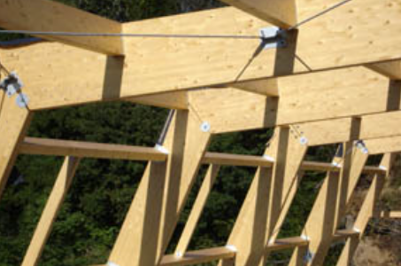
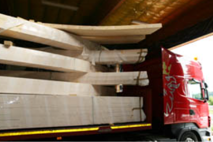
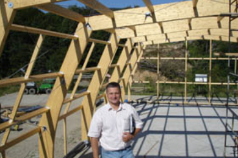

Do projektowania wykorzystujemy specjalny program kompatybilny z oprogramowaniem maszyn produkcyjnych, dzięki czemu konstrukcja jest w pełni zgodna z projektem. Dzięki procesowi projektowania polegającemu na modelowaniu całości konstrukcji w przestrzeni, optymalizujemy przekroje nośne elementów konstrukcji, profilujemy dowolne kształty zaproponowane przez Klienta. Po wykonaniu obliczeń tworzymy przestrzenny model konstrukcji wraz z połączeniami.
Nasi Dostawcy stosują najnowocześniejsze rozwiązania w produkcji elementów konstrukcyjnych - całość produkcji podlega ciągłemu komputerowemu monitoringowi nadzorowanemu przez wprawne oko fachowców. Wskutek tego możemy Państwu zapewnić wykonanie konstrukcji o najwyższych parametrach jakości. Przy selekcjonowaniu drewna, używanego później do produkcji elementów konstrukcji, oprócz selekcji optycznej następuje również selekcja komputerowa/maszynowa, co daje bezpieczeństwo użycia najlepszego materiału. Dzięki obróbce cyfrowej drewna możemy wykonać nawet najbardziej skomplikowane architektonicznie konstrukcje, łączące w sobie najwyższą jakość z niepowtarzalnym pięknem konstrukcji drewnianej.
Zapewniamy naszym Kontrahentom na każdym etapie współpracy fachowe doradztwo. Powyższe atuty, a także dobrze wyszkoleni i zorganizowani pracownicy i współpracownicy świadczą o naszym sukcesie. Dzięki tym kilku ważnym szczegółom możemy także pochwalić się Klientami (Inwestorami i Generalnymi Wykonawcami), z którymi współpraca nie zakończyła się na jednym przedsięwzięciu, lecz jest kontynuowana przy kolejnych zadaniach inwestycyjnych
